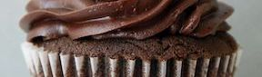

one of my go-to cupcake recipes.
cake
Preheat the oven to 350 F with a rack in the center. Spray two 8-inch round cake pans with nonstick spray. Whisk together dry ingredients in a large mixing bowl. Combine remaining ingredients in a large measuring cup. Add to the dry ingredients and whisk just into combined--a few lumps are okay. Divide batter between pans and bake for 35-40 minutes.
For cupcakes, divide batter among two dozen paper-lined or greased muffin cups and bake for 20-25 minutes.
frosting
Combine ingredients in a medium bowl or a standing mixer and beat with handheld or stand mixer until fluffy. Adjust measurements as desired.
